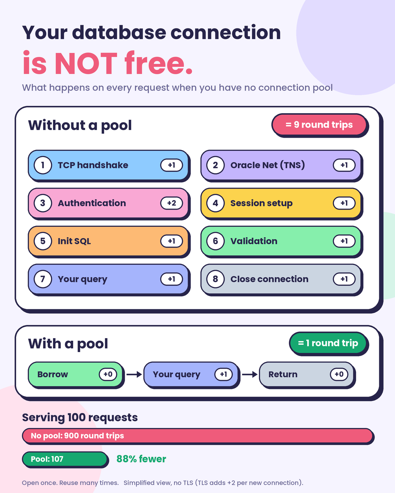

Article · Oct 2026 · Database · Performance
Connection Pools: How Big Should Your Pool Be?
Opening a connection to Postgres costs time. Closing one costs time too. So you keep some open and hand them out as work arrives — the hard part is deciding how many. Originally published on Substack.
The Pool
Opening a connection to Postgres costs time. Closing one costs time too. So instead of paying that on every request, you keep some connections open and hand them out as work arrives. That is a pool.
The hard part is deciding how many to keep. Ask ten engineers and you get ten numbers.
Ten thousand people hit your site in the same second and fire 15,000 to 20,000 queries between them. How many connections do you need? Ten thousand, one per person? A thousand? Ten?
The answer is smaller than you think.

What a Connection Competes For
Every connection you open grabs a slice of the machine: CPU time, disk access, network bandwidth and memory. So here's a rough first rule: one connection per core. Eight cores, eight connections. Add a ninth and the CPU has to juggle two connections on the same core — constantly switching between them wastes time, so both jobs finish slower than if you had just run them one after the other.
But that rule has a hole. It assumes every query keeps the CPU busy non-stop. In reality, most queries spend a surprising amount of time just waiting — and the biggest waiting room of all is the disk. That's where the “cores = connections” arithmetic breaks down.
Why disk waiting changes everything
Think of a spinning hard drive like an old record player: one needle, one spinning disc. The needle can only sit over one spot at a time. When your query asks for data, two physical movements happen:
- Seek time — the needle physically travels over to the track where your data lives
- Rotational latency — the disc keeps spinning until the exact data you want passes under the needle
Both are real, mechanical movement, measured in milliseconds — which is an eternity for a CPU. Caching in RAM shortens these waits, but it can never remove them, because eventually every query has to touch the disk.
Now here's the important part: while a query sits there waiting for the disk, its thread is doing absolutely nothing. It isn't calculating, it isn't using the CPU. The CPU is just sitting there, free.
That is the whole trick. You can run more connections than you have cores — as long as some of them are stuck waiting on the disk. The waiting ones burn zero CPU while the others do real work. Waiting ≠ working.
SSD vs HDD: the part everyone gets backwards
How many extra connections you can get away with depends on how long your queries block. And that depends almost entirely on what kind of disk you have:
- Spinning HDD: queries block for milliseconds on every read → lots of idle time → you can afford more connections than cores
- SSD: no needle, no spinning platter — reads come back in microseconds → queries barely block at all → connections stay busy → you need fewer, closer to your core count
Plenty of people get this exactly backwards: they upgrade to an SSD and then add connections. It's the reverse — less blocking means fewer connections.
Network: the forgotten third
Network waits work the same way. If your app pushes data faster than the ethernet card can send it out, the card stalls once its send buffers fill up — and the connection is, again, just standing there waiting. A 10-gigabit link stalls far less than a gigabit link; gigabit stalls far less than 100-megabit.
But here's the thing: compared to disk waits, network waits are tiny. That's why most pool-sizing formulas don't even bother counting the network — disk dominates the calculation.
The Formula
connections = ((core_count * 2) + effective_spindle_count)
effective_spindle_count counts the disks a query can hit at once,
and on an SSD with no spindle HikariCP counts it as 1.
Four cores and one disk gives 9, which rounds to 10.A 4-core i7 with a single disk will serve 3,000 users running simple queries at 6,000 transactions per second.
The Benchmarks Agree
A PostgreSQL benchmark shows throughput flattening once the pool passes roughly 50 connections, and Oracle demonstrated the same curve by cutting a pool from 2,048 down to 96. Push the pool much past 10 on a 4-core box and response times climb while throughput falls, because every extra connection is another process competing for the same cores.
When You Need More: PgBouncer
In another case, we have something called PgBouncer — or PGCat in the Go language — which is excellent when we have to run multiple Pods from Kubernetes and need to have multiple database connections and scale them vertically.